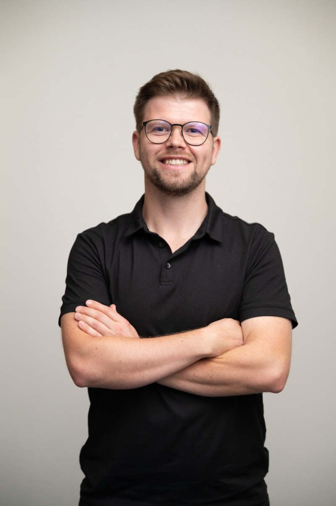

8+ let udržuji, rozvíjím a modernizuji desktopové aplikace v C#, WPF a WinForms nad SQL Serverem. Integrace přes REST API, automatizace, CI/CD — a zkušenost s vedením týmu a jednáním s klienty. 8+ years maintaining, extending and modernizing desktop applications in C#, WPF and WinForms on SQL Server. REST integrations, automation, CI/CD — plus hands-on experience leading a team and working directly with clients.

Nejvíc hodnoty přináším tam, kde běží dlouholetý software, na kterém stojí byznys — a je potřeba ho bezpečně rozvíjet, stabilizovat nebo posunout na moderní technologie. I add the most value where long-lived software runs the business — and needs to be safely extended, stabilized or moved to modern technology.
Vývoj a údržba WPF (MVVM) a WinForms aplikací — nové funkce, refaktoring, opravy produkčních chyb.Building and maintaining WPF (MVVM) and WinForms apps — new features, refactoring, production bug fixing.
Přechod z .NET Frameworku na moderní .NET — plán, postupná migrace bez výpadku a bez přepisování od nuly.Moving from .NET Framework to modern .NET — roadmap and incremental migration without downtime or a full rewrite.
T-SQL, návrh schématu, výkon, zálohy a obnova, upgrady verzí včetně automatizace obnovy po upgradu na SQL Server 2022.T-SQL, schema design, performance, backup/restore, version upgrades — including recovery automation after SQL Server 2022 upgrades.
Návrh a implementace API v ASP.NET Core, napojení na systémy třetích stran a interní služby.Designing and building ASP.NET Core APIs, connecting to third-party systems and internal services.
Azure DevOps pipelines, NuGet feedy, GitHub Actions, PowerShell skripty a plánované úlohy, které šetří ruční práci.Azure DevOps pipelines, NuGet feeds, GitHub Actions, PowerShell scripts and scheduled jobs that remove manual work.
Vedení vývojářů, code review, mentoring, roadmapa a zodpovědnost za release od buildu až k zákazníkovi.Leading developers, code reviews, mentoring, roadmap ownership and end-to-end release responsibility.
Většinu kariéry jsem strávil na MES (Manufacturing Execution System) pro velké průmyslové výrobce — software, který nesmí stát. Most of my career has been spent on an MES (Manufacturing Execution System) for large industrial manufacturers — software that can't afford to go down.
Nástroje, se kterými pracuji denně.The tools I work with every day.
Pracuji samostatně a za dodané řešení přebírám plnou zodpovědnost.I work independently and take full ownership of what I deliver.
Napište mi pár vět o projektu, technologiích a očekávaném rozsahu. Odpovím do 24 hodin a rád se domluvím na krátkém callu. Send me a few lines about the project, the stack and the expected scope. I’ll reply within 24 hours and am happy to set up a short call.